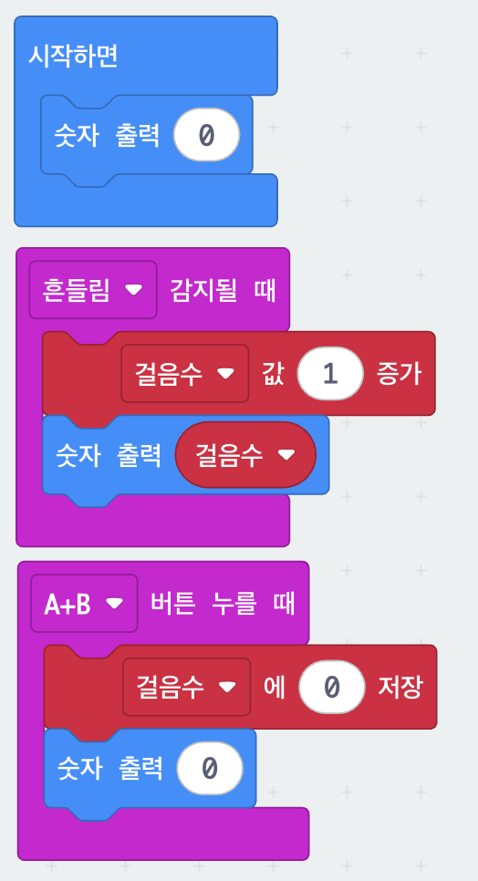

1. 만보기
micro:bit를 손에 들고 흔들 때마다 걸음 수가 1씩 올라가는 만보기입니다. 걸음 수를 담아 두는 변수를 만들고, 흔들림이 감지될 때마다 그 변수의 값을 1씩 늘리는 것이 핵심입니다.
블록 코드
블록을 끌어 옮기거나 마우스 휠로 확대해서 볼 수 있어요. 시뮬레이터로 실행을 누르면 화면 속 micro:bit로 먼저 해 볼 수 있고, MakeCode에서 열기를 누르면 이 코드가 편집기에 그대로 열려 고치고 다운로드할 수 있어요.

코드 주소: https://makecode.microbit.org/S42237-66411-94332-88319
준비물
- micro:bit 본체 1대
사용법
| 흔들기 | 걸음 수가 1 늘어납니다 |
|---|---|
| A + B 동시에 | 걸음 수를 0으로 되돌립니다 |
막힐 때
흔들어도 숫자가 안 올라가요.
살짝 흔들면 감지되지 않습니다. 손목을 이용해 딱 끊어지게 흔들어 보세요.
한 번 흔들었는데 2씩 올라가요.
크게 흔들면 흔들림이 두 번 감지될 수 있습니다. 고장이 아니니 조금 작게 흔들어 보세요.